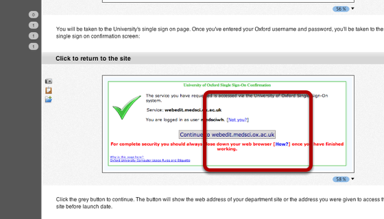
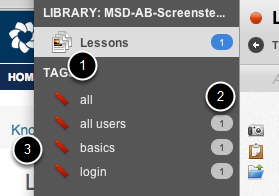

How to log in to the website. Your single sign on username and password are the ones you use for your Oxford Nexus email account.
You’ll find this just to the left of the University brand mark.
You will be taken to the University’s single sign on page. Once you’ve entered your Oxford username and password, you’ll be taken to the single sign on confirmation screen:
Click the grey button to continue. The button will show the web address of your department site or the address you were given to access the site before launch date.
 You will be returned to the site and you should see your name next to the University brandmark. Pages on the site won’t look any different until you reach a page you have permission to edit.